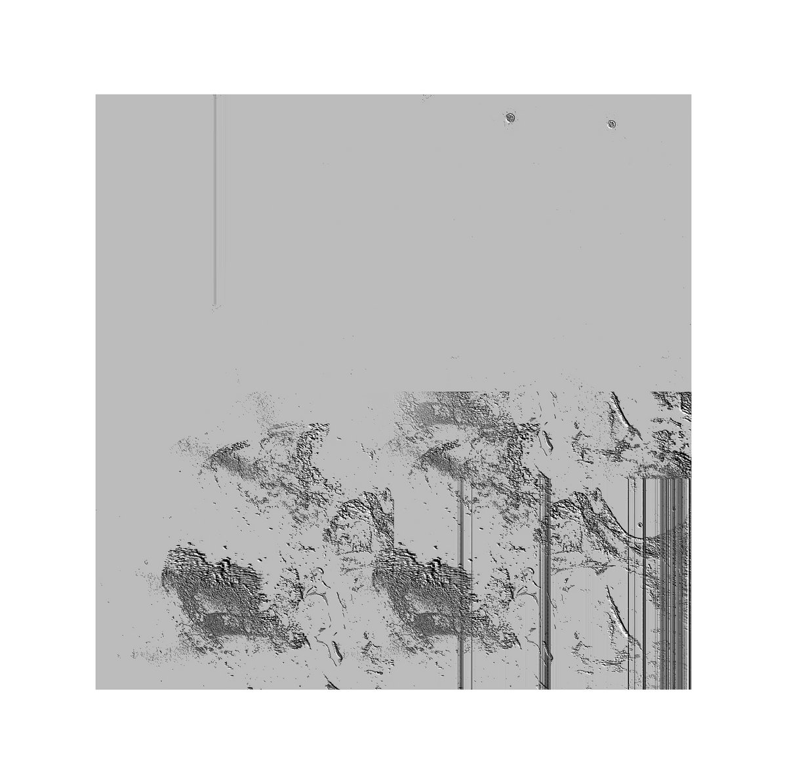
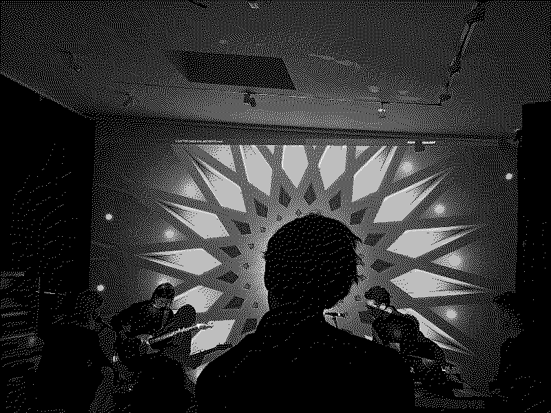

Agalma XIII
230417
It's been a while, but Agalma is back. The label has always been focused on collective efforts and we have always emphasized allowing events to unfold naturally but that's exactly what happened with our latest project. I was approached by Helena Jónsdóttir from Physical Cinema Festival to put together a group to improvise over short films during the festival, and I saw it as the perfect opportunity to create something special. So, I brought together some amazing friends who haven't really played together before to perform with me.
Brynjar Daðason was among them, and I've played with him several times before. I even played synth on his latest album which was released on vinyl just last week. Sara Flindt was also part of the group. I've been working with her for a while, and we've been wanting to do a project like this together for some time. The last person to join us was Curro Rodriguez Sanchez, whom I had collaborated with once before, but we had never done an improvised show like this together. He's an incredible visual artist and flamenco singer.
Brynjar and I recorded the show, and I spent some time getting a cohesive mix together for listening. Today, it's out and ready for you to enjoy!
